reckoner is an interpreter for whitespace-tokenized RPN
lines, evaluated against a dictionary of registered words over
cuttle's runtime stack. It reifies Shoddy's own
concatenative core as a value a program can drive one line at a time —
the runtime dialect is Appendix A, reified. Literals, dictionary lookup,
list literals ({ … }), quoted programs
([ … ]), user-word definition (: NAME … ;),
registers (STO/RCL), mode words,
UNDO/REDO, a TRACE mode, an
adding-machine tape and HELP are all here, plus the combinators
(IFT IFTE TIMES MAP FILTER FOLD) that take a quoted program off
the stack and run it back through this same evaluator.
It is general infrastructure, not a calculator: a formula read from a spec file, an expression typed into a form field, and an embedded scripting layer are equally its callers, which is why it is not named for the showpiece RPN shell built on top of it.
Nothing keyable aborts the mill. Underflow, a missing
arity, an unknown word, a kind with no arithmetic, a divisor of zero, a
domain a builtin would Error on — every one of these answers a
value with the state intact. Losing the stack, the dictionary, the
registers and the tape is worse than any wrong answer, so every guard is
written before the builtin it protects rather than after it.
Once evaluating a line is a pure function from one state to the next,
undo falls out of the semantics rather than needing to be built: keep the
last fifty states and stepping back is just picking an earlier one. The
same purity is what lets a mill embed a formula language without owning an
evaluator itself — hand RckEval a state and a line, get back
the next state and the output to show, and the mill never has to reason
about partial execution, because a whole line evaluates or the state
stands exactly as it was.
And because reckoner knows no domain — there is no
Include of stats,
csv, file or anything else,
and no word here names one — every domain arrives through
RckReg as a seed file with zero engine changes. A mill that
wants a spreadsheet-style column mean seeds seedstats;
one that never touches a file never pays for
seedfile's dictionary entries. The engine's own
size is fixed; the dictionary's is not.
A ready reckoner was the printed table of pre-computed answers every cloth merchant and mill clerk worked from to price a piece by length and weight — the trade's calculating instrument before there were calculators. "Reckon" is the plain regional word for compute besides. The RPN calculator built on this machine is one caller among several, not the machine itself, which is the whole reason the engine is not named for the showpiece shell: a form field evaluating an expression and a spec file carrying a formula are equally reckoners, and a name taken from the calculator would misdescribe both of them. (The heritage of the name has the rest of the mill.)
Start from RckNew() — the engine core seeded, nothing else
— and thread a state through RckEval one line at a time:
Include "reckoner.shoddy"
Def Main()
Let st0 = RckNew()
Select Case RckEval(st0, "3 4 + 5 *")
Case RckNext(st1, out)
Print(RckShow(st1)) ' x: 35
Case RckStop(st1, why, out)
Print(why)A seed file folds its own words in before the first line runs — a mill that wants statistics and CSV loading seeds both:
Let st0 = RckSeedCsv(RckSeedStats(RckNew()))
Select Case RckEval(st0, Chr(34) & "dat/sales.csv" & Chr(34) & " CSVLOAD 3 CSVCOLUMNNUMS MEAN")
Case RckNext(st1, out)
Print(RckShow(st1)) ' x: 12483.61A few things worth remembering:
: SQ DUP * ; validates SQ's
body against the dictionary as it stands, so a definition can only name
words that already exist — recursion is impossible by construction, and
iteration is TIMES, MAP, FILTER and
FOLD.{ … } literal, a combinator's program and a user
word's body each run on a stack of their own, while registers, the
dictionary and the modes thread through and any change persists. Token
lists have no closures, so STO before and RCL
inside is the only way a program reaches a value that is not its own
element — the closure substitute, and the reason the threading is
guaranteed rather than incidental.MEAN in the dictionary, not Mean in scope — the
dictionary, not the include table, is the runtime route to a word, so a
mill that never includes stats
directly can still answer MEAN from the entry line.Error and recover — it has to pre-flight the same
domain check the builtin would have made and answer a refusal instead. That
duplication (division and Mod by zero, SQRT of a
negative, statistics on an empty list, and so on, each re-stated beside the
word it guards) is the honest price of the missing feature, paid once per
seed rather than retrofitted later.RckReg(state, name, arity, body, effect, desc) adds a
primitive, RckDef a user word, RckUnreg removes
one, and RckWords/RckHelp read the metadata every
registration is required to carry back out again.The engine core every mill gets before it seeds anything — about forty words, arithmetic and comparison as ordinary registered primitives, the rest reaching the stack, registers, modes, history or the evaluator itself
| Word | Description |
|---|---|
| + ( a b -- a+b ) | Add two cells: numbers, money, matrices of one shape, or strings joined. |
| - ( a b -- a-b ) | Subtract: numbers, or money exact at the cent. |
| * ( a b -- a*b ) | Multiply: numbers, matrices, or a matrix scaled by a number. |
| / ( a b -- a/b ) | Divide one number by another. |
| ^ ( a b -- a^b ) | Raise a number to a power. |
| MOD ( a b -- r ) | Truncated remainder, which keeps the sign of a. |
| WRAP ( a b -- r ) | Floored modulo: the answer keeps the sign of b, so -340 256 WRAP is 172. |
| ABS ( x -- |x| ) | Magnitude, without the sign. |
| SGN ( x -- s ) | The sign of a number: -1, 0 or 1. |
| FLOOR ( x -- n ) | The largest whole number no greater than x. |
| CEIL ( x -- n ) | The smallest whole number no less than x. |
| ROUND ( x -- n ) | Round to the nearest whole number, halves upward. |
| MIN ( a b -- m ) | The smaller of two numbers. |
| MAX ( a b -- m ) | The larger of two numbers. |
| SQRT ( x -- root ) | Square root; refuses a negative number. |
| EXP ( x -- e^x ) | The exponential of x. |
| LN ( x -- ln x ) | Natural logarithm; refuses zero and below. |
| LOG ( x -- log x ) | Logarithm base ten; refuses zero and below. |
| PI ( -- pi ) | The ratio of a circle to its diameter. |
| E ( -- e ) | The base of the natural logarithm. |
| Word | Description |
|---|---|
| = ( a b -- flag ) | Whether two cells are equal, all the way down. |
| <> ( a b -- flag ) | Whether two cells differ. |
| < ( a b -- flag ) | Whether a orders before b; numbers, strings and money order. |
| > ( a b -- flag ) | Whether a orders after b. |
| <= ( a b -- flag ) | Whether a does not order after b. |
| >= ( a b -- flag ) | Whether a does not order before b. |
| NOT ( flag -- flag ) | The other truth value. |
| AND ( a b -- flag ) | True when both are true. |
| OR ( a b -- flag ) | True when either is true. |
| TRUE ( -- flag ) | The true value. |
| FALSE ( -- flag ) | The false value. |
| Word | Description |
|---|---|
| DUP ( x -- x x ) | Copy the top cell. |
| DROP ( x -- ) | Discard the top cell. |
| SWAP ( x y -- y x ) | Exchange the top two cells. |
| OVER ( x y -- x y x ) | Copy the second cell over the top. |
| NIP ( x y -- y ) | Discard the second cell. |
| TUCK ( x y -- y x y ) | Copy the top cell under the second. |
| ROT ( x y z -- y z x ) | Bring the third cell to the top. |
| ROLL ( n -- ) | Move the cell at level n to the top, counting from 1 at the top. |
| PICK ( n -- x ) | Copy the cell at level n to the top. |
| DEPTH ( -- n ) | How many cells the stack holds. |
| CLEAR ( … -- ) | Empty the stack. |
| GATHER ( x1 … xn n -- list ) | Collect the n cells under the count into one list. |
| UNPACK ( list -- x1 … xn n ) | Spread a list onto the stack and push how many; UNPACK GATHER round-trips. |
| LASTX ( -- x ) | The top cell the last word to take one consumed. |
| Word | Description |
|---|---|
| STO ( x name -- ) | Bank a cell in a named register. |
| RCL ( name -- x ) | Fetch a cell from a named register. |
| CLOSE ( name -- ) | Shut the resource opened under that name and let the name go. |
| CLOSEALL ( -- n ) | Shut everything that is open and push how many there were. |
| BOUND ( -- list ) | What is open right now: a list of name/kind pairs, empty when nothing is. |
| UNDO ( -- ) | Put the stack back as the previous line found it. |
| REDO ( -- ) | Put back the stack UNDO stepped away from; anything else you do clears it. |
| DEG ( -- ) | Read and write angles in degrees. |
| RAD ( -- ) | Read and write angles in radians. |
| FIX ( n -- ) | Show numbers to n decimal places. |
| SCI ( n -- ) | Show numbers in scientific notation to n places. |
| ENG ( n -- ) | Show numbers in engineering notation to n places. |
| STD ( -- ) | Show numbers at their own precision. |
| : NAME … ; | Define a user word; refused at definition if its body names an unknown word. |
| VIEW ( -- ) | Print the word named next back as it was defined. |
| HELP ( -- ) | Show what the word named next does — HELP MEAN, not "MEAN" HELP. |
| WORDS ( -- ) | List every word in the dictionary, grouped by where it came from. |
Both are state, because both are reached by dictionary words and a dictionary word reaches the state or it reaches nothing. Neither performs an effect: the trace rides the same output lines every other word answers with, and the shell decides what to do with them.
| Word | Description |
|---|---|
| TRACE ( -- ) | Show the stack after every token, indented where a program runs, until NOTRACE. |
| NOTRACE ( -- ) | Stop showing the stack after every token. |
| TAPE ( -- n ) | How many rows the tape holds; it keeps the last 500 and drops the oldest. |
| CLEARTAPE ( -- ) | Throw the tape away and start it again empty. |
A trace row is the token, a marker and a stack. The marker is
| for a token that ran, » for a
sub-evaluation being entered and « for one returning,
and the indent is two spaces per level of nesting. That indent is not
decoration: a user word's body, a { … } literal and
every pass of a combinator run on a fresh stack, so the cells on
an indented row are a different stack from the ones above it. Printed
flat, a cascade would read as one stack that suddenly lost its lower
half.
> 250 VAT
250 | 300 250
VAT » DUP 0.2 * +
DUP | 250 250
0.2 | 250 250 0.2
* | 250 50
+ | 300
VAT « 300 300VAT is applied with 300 250 on the caller's
stack and its body sees only the 250 — the one cell a user
word is ever given.
| Word | Description |
|---|---|
| SIN, COS, TAN ( a -- x ) | Sine, cosine, tangent of an angle in the current angle mode. |
| ASIN, ACOS ( x -- a ) | The angle whose sine or cosine is x; refuses x outside -1 to 1. |
| ATAN ( x -- a ) | The angle whose tangent is x. |
| ATAN2 ( y x -- a ) | The angle of the point x y from the origin, in all four quadrants. |
| Word | Description |
|---|---|
| IFT ( x flag prog -- y ) | Run prog on x when flag is true, otherwise leave x. |
| IFTE ( x flag then else -- y ) | Run one of two programs on x, chosen by flag. |
| TIMES ( x prog n -- y ) | Run prog on x n times over, each pass taking the last answer. |
| MAP ( list prog -- list ) | Run prog on every element and collect the answers. |
| FILTER ( list prog -- list ) | Keep the elements prog answers True for. |
| FOLD ( list init prog -- x ) | Run prog over each element with a running answer, starting from init. |
| Word | Description |
|---|---|
| RckSave(st) | The user dictionary as a List Of String, one : NAME … ; line per definition — the mill owns the path. |
| RckLoad(st, lines) | Re-registers a saved dictionary; a malformed line errors and leaves the dictionary unchanged. A definition, list or program may be written over several lines, and a file that ends before one of them closes errors the same way. |
| RckShow(st) | Line-oriented text for a scrolling shell: x: y: z: t: labels, deepest first so x lands nearest the prompt. Complete on its own — [ empty ] for an empty stack, and [ depth n ] above the top four for one deeper than four. |
| RckRows(st) | Structured rows (label, kind constant, text) for a graphical shell, one per cell however deep — the same formatting path as RckShow, so the two cannot disagree about a row. A graphical shell paints what it has room for and puts the depth in a status field. |
A : NAME … ;, a { … } or a
[ … ] may run past the end of the line it started on. A
host that has more input to offer — a prompt, or the next line of a file —
asks these three whether to offer it, and they answer from the
tokens, before anything is evaluated. That order is the whole
point: the unterminated signal inside RckEval arrives with
every token to its left already run, so a host that decided by running the
line would run that part twice once the rest arrived.
| Word | Description |
|---|---|
| RckWants(line) | Whether the next line should be taken with this one. True only when something is open that a further line could still close. A line that will not tokenize answers False, which is what keeps an unterminated string out of it — joining one would turn the line break inside it into a space, where a space is content rather than separation. |
| RckJoinLines(buf, line) | Two physical lines as one, joined with a single space. RckTokens separates on runs of whitespace without counting them, so the result is the token stream the one-line form would have given. |
| RckShapeOf(toks) | The answer underneath RckWants, for a host that wants the reason: RckSealed is a whole logical line, RckAjar names the mark still open, RckWrecked can never close whatever is added — a stray }, a : with no name, or a list left open inside a definition that has already closed. |
Only RckAjar means "wait". Everything else is handed to
RckEval exactly as a single line is, so every refusal keeps
the wording it always had and a host adds no message of its own.
RckLoad is built on these, which is why a file may be written
the way a session may be typed.
A handle must never reach the stack. The ground for that rule is
specific: a handle is a Number, UNDO restores the stack, and
the number naming an open file would go with it — leaving the file open
and unreachable. That is a true account of a handle on the stack.
It is not an account of a resource held anywhere else.
RckUndone rewrites RckStack,
RckHist and RckFore, and nothing else. So a
resource bound in the state under a name the session chose is
still bound after any number of undos, exactly as a word defined on an
earlier line is still defined. The name is the whole of the difference: it
is not a value that can be dropped, overwritten or undone away, and
CLOSE and BOUND can always reach what is open
because the table — not the stack — is where openness lives.
The closer travels with the resource. The engine cannot
know how to shut a recio file, an isam table or a plotter without depending
on every machine that has one. So whatever opens it supplies a closer with
the handle closed over inside, and the engine shuts everything the same way
without knowing what any of it is — the shape
isam already uses for its reader, writer and key
functions. ResKind is for a session to read in
BOUND, never for the engine to branch on; the moment it
branched on a kind it would be back to depending on the machines.
No handle appears anywhere in this. BOUND answers names and
kinds, so there is no number a session could take away and use.
| Word | Description |
|---|---|
| RckBind(st, name, kind, shut) | Bind a live resource under a name, with shut a [ -- Boolean ] that has the handle closed over inside it. What a machine's own OPEN word calls once it has one. |
| RckBoundTo(st, name) | Whether anything is open under that name — the check an OPEN word makes before binding, so it can refuse in its own words. |
| RckResOf(st, name) | The resource under that name, as a list that is empty when there is none. |
| RckBoundNames(st) | Every name currently bound. |
| RckUnbind(st, name) | Let a name go without calling its closer. CLOSE is the word that does both. |
One thing the table cannot check: two names bound to the same handle. Closing both would shut it twice, and a second close on a returned handle aborts. A closer is an opaque function, and comparing two of them is not a question Shoddy can ask — so it belongs to whatever opens the resource, which hands out one binding per open.
Files bridge the rest of the standard library into this engine
through the registration API above — one per domain, each folding its
words in with RckReg. None of them is catalogued in
the general machines index: a seed has no bearing
on its own, only together with cuttle and this engine, so it
is listed here instead, where seeding one actually means something.
| Seed | Bridges | |
|---|---|---|
| seedmath | LOGB LOG2 HYPOT DIST CLAMP LERP REMAP ROUNDTO — math's geometry and interpolation words. | |
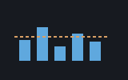 | seedstats | MEAN MEDIAN STDDEV STDDEVP VAR SUM QUANTILE CORREL NORMCDF NORMINV TCDF — stats's descriptive layer, guarded where stats itself isn't. |
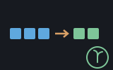 | seedseq | RANGE LENGTH REVERSE CONCAT FIRST REST SORTL PAIR HEAD TAIL — list and pair structure over seq. |
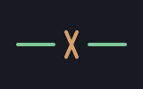 | seedstr | STRCAT UPPER LOWER TRIM SPLIT JOIN TOFIXED — str's text words. |
| seedmoney | MONEY MADD MSUB MSPLIT MFMT — money's exact currency. | |
| seedmatrix | MAT IDENT TRANSP MMUL MATADD MGET DOT — matrix, converting at the bridge, no array cell at the keyboard. | |
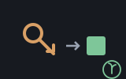 | seeddict | DPUT DGET DHAS DKEYS — a list of pairs treated as a dictionary, keyed structurally. |
| seedfile | READLINES WRITELINES APPENDLINE FILEEXISTS — text files over the guarded builtins, never the aborting ones. | |
| seedcsv | CSVLOAD CSVREAD CSVSAVE CSVWIDTH CSVCOLUMN CSVCOLUMNNUMS CSVHEADS CSVBODY CSVGET CSVWHERE CSVPAIRS — csv over the guarded builtins. | |
| seedisam | ISAMALL ISAMRANGE ISAMHAS ISAMGETOR ISAMCOUNT — isam's whole-table words, over a handle the caller already opened. | |
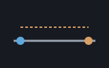 | seedclock | STAMP STAMPDATE STAMPTIME TICKS ELAPSED FORMATDURATION — clock's stamping and monotonic timing. |
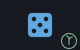 | seedrandom | RANDOM RANDOMRANGE RANDOMINT SHUFFLE SAMPLE SEED — random, plus the builtin that makes a session reproducible. |
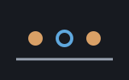 | seedbool | HEX BIN INBASE FROMBASE BITAND BITOR BITXOR BITNOT SHL SHR MASK GETFIELD BITAT POPCOUNT NAND NOR XOR XNOR IMPLIES IFF — bool's binary layer, translating the strictest guards in the tree into refusals. The widest seed, and the six gates are here because a user word takes exactly one cell, so a keyboard cannot define a two-argument XOR for itself. |
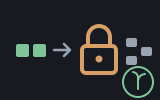 | seedshaker | SHAKE UNSHAKE UNSHAKEOR SHAKEOK SHAKEMOD — shaker's reversible obfuscation over lists of numbers. |
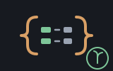 | seedjson | JSONPARSE JSONTEXT JSONPRETTY JSONLOAD JSONSAVE — json, an object landing as the same dict shape seeddict already established. |
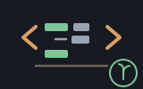 | seedxml | XMLPARSE XMLTEXT XMLPRETTY XMLLOAD XMLSAVE — xml, a node as a tagged list, an element's attributes as a dict. |
| seedhtml | HTMLPARSE HTMLTEXT HTMLPRETTY HTMLLOAD HTMLSAVE — html's tolerant reader and writer, sharing seedxml's tree shape for the same Xml type. | |
| seedsimplex | LPPROBLEM LPSOLVE MPSPARSE MPSPARSEZERO MPSLOAD MPSLOADZERO MPSNAMES — simplex's linear-programming solver, a problem and its solution each a dict; and mps's reader, so a problem can arrive from an MPS file rather than being built word by word. | |
| seedlin | Determinants, inverses, systems, echelon forms, rank, the LU/QR/Cholesky factorisations, characteristic polynomials, eigenvalues and the vector words — lin's named public surface. | |
| seedeng | Trigonometry, hyperbolics, complex numbers, statistics, curve fitting and distributions, number theory, polynomial arithmetic, sequences, unit conversion and physical constants — eng's non-quotation surface. | |
| seedfin | Rates, time value of money, growth, statistics, curve fitting, budgeting, loan amortization, NPV/IRR/payback, CAGR/ROI, dollar-cost averaging, margin, break-even, payroll and depreciation — fin's core, its date/bond subsystem left for its own pass. | |
| seedalg | ALGSIMPLIFY ALGEXPAND ALGFACTOR ALGSOLVE ALGDESOLVE — alg's symbolic algebra, staying at the text boundary rather than putting an expression tree on the stack. | |
| seedneural | NEURALNEW NEURALPREDICT NEURALSCALERFIT NEURALSCALERAPPLY — neural's network and scaler as dicts, both training paths, both weight file formats, and the whole model. | |
| seedbuiltin | LEN MID VAL NTH CALL ERROR and the rest of the RUNTIME's own builtins — the only seed that bridges no machine. | |
| seedrecio | RECOPEN RECCOUNT RECFIELDS RECGET RECALL RECPUT RECAPPEND — recio's record files, driven by a schema typed at the prompt. The first seed that opens something and keeps it open, over the named-resource table above. | |
| seedisam | ISAMOPEN ISAMINSERT ISAMGETOR ISAMRANGE — isam's indexed tables, over the same table and the same schema. Also has an older entry point that takes a table its host already opened. | |
| seedvt100 | VTCLEARSCREEN VTCURSORPOS VTBOLD VTEVALKEY — vt100's escape sequences as strings. Pure: the machine builds them and never emits one. | |
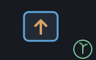 | seedkeys | KEYNAME KEYGLYPH KEYIS — keys's physical key codes, named. A lookup table, and no keyboard is read. |
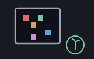 | seedscribbler | SCRIBOPEN SCRIBWIDTH SCRIBHEIGHT SCRIBTITLE SCRIBPIXEL SCRIBFILL SCRIBTEXT SCRIBGETPIXEL SCRIBBLIT SCRIBSAVE — scribbler's window, held by name over the table above. A session can draw. |
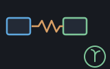 | seednet | NETGET NETREQUEST — net's request/response half. Opens and closes inside one word, so it needs the table not at all. |
| seedturtle | TURTLEFORWARD TURTLERIGHT TURTLEPENUP TURTLESAVE — turtle's LOGO turtle. The seed RckUpdated exists for: the first resource whose state is Shoddy's own and changes with every word. | |
| seedplotter | PLOTHISTOGRAM PLOTBAR PLOTPIE PLOTBOX PLOTSCATTER — plotter's five charts, one word away from the numbers a session already has. | |
| seedbuzzer | BUZZPLAY BUZZTONE BUZZNOTE BUZZFREQ BUZZLENGTH BUZZQUEUED BUZZSTOP BUZZGAIN BUZZWAVE — buzzer's MML tunes. The odd one out: a sound is fired rather than opened, so it binds nothing and needs no CLOSE. | |
| seedhttps | HTTPSGET HTTPSTATUS HTTPHEADER HTTPBODY — https's replies taken apart. Five of its seven words are pure, so they work with no network at all. | |
| seedregex | RXTEST RXFIND RXFINDALL RXGROUPS RXREPLACE RXSPLIT RXQUOTE RXWHY — regex at the keyboard, so a session can ask a stated rule about a string it is holding. The pattern is a STRING and is compiled on every call, because a Cell cannot carry a compiled program; RXWHY is the one word that reports a bad pattern rather than refusing it. | |
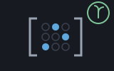 | seedsparse | SPARSE SPDENSE SPENTS SPNNZ SPGET SPCOLIX SPCOLVS SPCOLDOT SPMATVEC SPVECMAT SPTRANSP SPADDROW SPADDCOL — sparse's matrices, the ones that are mostly zeros. A Sparse is a dict rather than a cell of its own, so its storage is visible: a row index and a value per entry, and nothing for the gaps. |
| seedmip | MIPPROBLEM MIPSOLVE MIPFIXED MPSMIP MPSMIPLOAD — mip's branch and bound, for answers that have to be whole numbers. It speaks seedsimplex's problem dict, so MIPFIXED's answer goes straight into LPSOLVE — which is the only honest route to a shadow price once integers are involved. | |
| seedterminal | PRINT — the console's Print builtin (terminal documents it), so a looping program can report each pass the moment it happens rather than when the line finishes. The write-only seed: the reading builtins stay with the shell that owns the session's input. |
| User | How | |
|---|---|---|
| halifax | The whole of the calculator. RckNew folded through every seed above is its dictionary, RckEval is the only door its shell needs, and RckShow, RckSave, RckLoad and RckTape are its render, its file format and its tape. |
Every reckoner seed listed above also includes this engine, to register its words against — already listed there rather than repeated here.
| Machine | Why | |
|---|---|---|
| cuttle | The whole value set and pure algebra every word and combinator here runs against. | |
| seq | List plumbing throughout the tokenizer, the evaluator's walk, and the combinators' folding. | |
| str | Upper case-folds a name at registration and lookup, matching the language. | |
| dict | The registers are an association list, exactly as dict already shapes one. |